AirScript与金山文档
AirScript相当于一段脚本，嵌入在金山文档组件中，运行在云端，使用JavaScript语言编写，提供对表格数据的增删改查等功能。正是因为他运行在云端，我们可以使用他来实现跨端共享数据
创建AirScript
登录金山文档
打开金山文档网页 https://kdocs.cn, 点击免费使用。按要求注册并登录。
新建表格
打开脚本编辑器
选择菜单 效率-高级开发-AirScript脚本编辑器
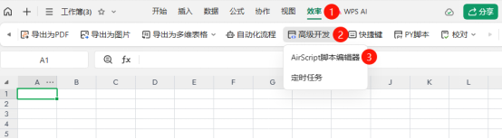
新建脚本
这里有"文档共享脚本"和"我的脚本"两个类型，我们选择"文档共享脚本"，脚本API有两种，我们这里选择1.0。（我自己的测试2.0有些bug，官方正在修复中）
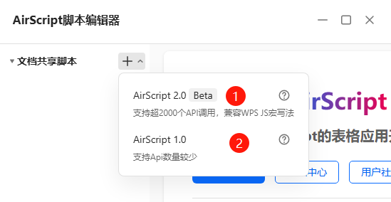
编辑脚本
我们先在代码编辑区简单的输入个return “hello world”
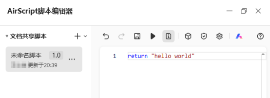
复制脚本链接
点开脚本名称右边的省略号，选择“复制脚本webhook”。 这个webhook就是脚本的网址，我们后期就是要使用Web客户端访问这个网址
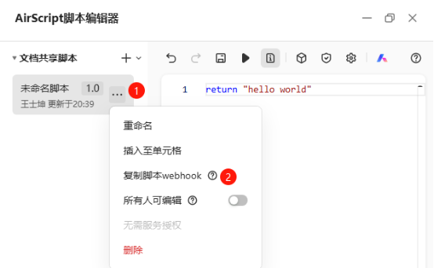
创建脚本令牌
脚本令牌相当于访问上面这个webhook的口令，需要妥善保存，不可外泄。 点击盾牌按钮，开始创建脚本令牌。
复制脚本令牌并妥善保存
脚本令牌若忘记，只能删除令牌重新生成。 令牌有180天有效期，到期可以延期。
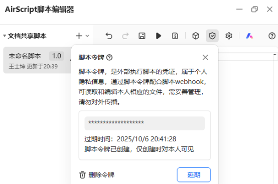
建立Web客户端与金山文档的连接
界面设计
在App Inventor的设计界面中，添加一个按钮，一个标签，一个Web客户端
代码设计
创建两个变量
记录上面生成的webhook网址和脚本令牌
自定义发送post请求的过程
设置Web的网址为webhook。 在请求头中设置脚本令牌和请求文本的格式为json。 post的文本有一定的格式，必须是{“Context”:{“argv”:payload}}格式的json文本。其中的payload就是我们要发送的参数，我们需要把参数也写成json格式。 (所有图片都可以双击放大查看)
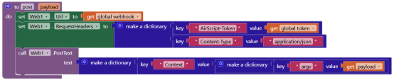
在Web.GotText事件中接收服务器返回的数据
现在我们发送一个空文本，看看服务器的返回文本，其中的result正是我们在脚本中写的hello world，说明我们的App Inventer与金山文档交互成功。返回文本中包含多个字段，其中的result和error是我们比较关注的，可以使用字典提取这两个键值。
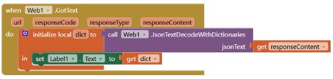
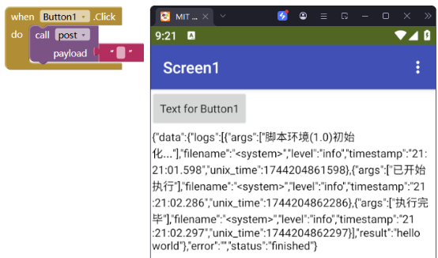
使用AirScript操作金山云文档
添加行
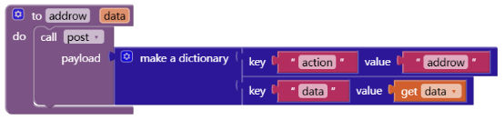
我们向AirScript发送两个字段，action和data。 我们可以把多个操作命令写在一个AirScript脚本文件中，为了区分各个命令，我们使用action来指定当前的操作。 data就是我们要添加的记录，为一维列表。
例如，我们要操作一个用户名和密码的表格。
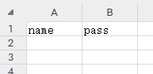
我们要添加一条记录[“wang”,“999”]:
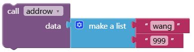
为了接收该条记录，在脚本编辑器中写入：
let action = Context.argv.action;
let sheetName = Context.argv.sheetname || "Sheet1";
let sh = Application.Sheets(sheetName);
if (action == "addrow") {
let data = Context.argv.data || [];
let row = sh.UsedRange.RowEnd + 1;
for (let i = 0; i < data.length; i++) {
sh.Cells(row, i + 1).Value = data[i];
}
return "done";
}
return "unknown action";
这段脚本的作用，是在文档的最后添加一行，并将收到的数据写入该行。其中的Context.argv.xxx 就是读取传来的参数。
现在，运行addrow，就会返回done
云文档就变成了类似这样：
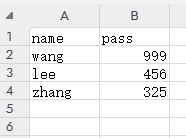
读取行数据
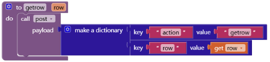
告诉脚本需要读取的行的行号，让他返回该行的数据。
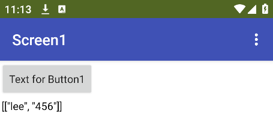
脚本如下
if (action == "getrow") {
let row = Context.argv.row || "1";
let maxCol = sh.UsedRange.ColumnEnd;
return sh.Range(sh.Cells(row, 1), sh.Cells(row, maxCol)).Value2;
}
查找数据
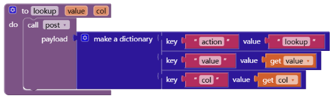
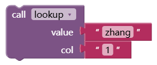
在第一列中查找zhang，返回：
大多数情况下，我们是不知道数据所在的行号的。 我们可以在col列中查找value数据，若找到，返回当前行的数据列表，若没有，返回空列表。你也可以修改脚本，仅返回某个单元格的数据。
if (action == "lookup") {
let value = Context.argv.value || "";
let col = Context.argv.col || "1";
let rowEnd = sh.UsedRange.RowEnd;
let colEnd = sh.UsedRange.ColumnEnd;
let cells = sh.Cells;
let found = -1;
for (let i = 1; i <= rowEnd; i++) {
if (cells(i, col).Value2 == value) {
found = i;
break;
}
}
if (found == -1) {
return [];
} else {
return sh.Range(sh.Cells(found, 1), sh.Cells(found, colEnd)).Value2;
}
}
删除行
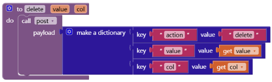
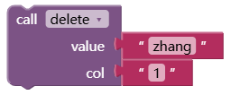
在col列中查找value，若找到，将当前行删除。
脚本如下：
if (action == "delete") {
let value = Context.argv.value || "";
let col = Context.argv.col || "1";
let rowEnd = sh.UsedRange.RowEnd;
let cells = sh.Cells;
//这里我们要从最后一行倒着向上查找
for (let i = rowEnd; i >=1; i--) {
if (cells(i, col).Value2 == value) {
cells(i, col).EntireRow.Delete()
}
}
return "done"
}
更多的更复杂的查询脚本可以在此基础上修改而来。
云文档增删改查脚本
这段脚本包含了读取行、列、单元格、整张表，查询行，添加行，删除行等功能，可以直接使用。
//获取命令参数和数据表名。若没有指定就用默认值。
let action = Context.argv.action || "getsheet";
let sheetName = Context.argv.sheetname || "Sheet1";
let sh = Application.Sheets(sheetName);
//在col列中查找value值，若找到返回整行，否则返回空
if (action == "lookup") {
let value = Context.argv.value || "";
let col = Context.argv.col || "1";
let colEnd = sh.UsedRange.ColumnEnd || "1";
let rowEnd = sh.UsedRange.RowEnd;
let cells = sh.Cells;
let found = -1;
for (let i = 1; i <= rowEnd; i++) {
if (cells(i, col).Value2 == value) {
found = i;
break;
}
}
if (found == -1) {
return buildData("[]");
} else {
return buildData(sh.Range(sh.Cells(found, 1), sh.Cells(found, colEnd)).Value2);
}
}
//返回row行col列的单元格的值
else if (action == "getcell") {
let col = Context.argv.col || "1";
let row = Context.argv.row || "1";
return buildData(sh.Cells(row, col).Value);
}
//返回第row行的值列表
else if (action == "getrow") {
let row = Context.argv.row || "1";
let maxCol = sh.UsedRange.ColumnEnd;
return buildData(sh.Range(sh.Cells(row, 1), sh.Cells(row, maxCol)).Value2);
}
//返回第col列的值列表（的列表）
else if (action == "getcol") {
let col = Context.argv.col || "1";
let maxRow = sh.UsedRange.RowEnd;
return buildData(sh.Range(sh.Cells(1, col), sh.Cells(maxRow, col)).Value2);
}
//返回整个表格的值列表
else if (action == "getsheet") {
return buildData(sh.UsedRange.Value2);
}
//在表格末尾添加一行并赋值
else if (action == "addrow") {
let data = Context.argv.data || [];
let row = sh.UsedRange.RowEnd + 1;
for (let i = 0; i < data.length; i++) {
sh.Cells(row, i + 1).Value = data[i];
}
return buildData("done");
}
//设置第row行的数据
else if (action == "setrow") {
let row = Context.argv.row || sh.UsedRange.RowEnd + 1;
let data = Context.argv.data || [];
for (let i = 0; i < data.length; i++) {
sh.Cells(row, i + 1).Value = data[i];
}
return buildData("done");
}
//设置第row行第col列的单元格的值
else if (action == "setcell") {
let col = Context.argv.col || "1";
let row = Context.argv.row || "1";
let value = Context.argv.value || "";
sh.Cells(row, col).Value = value;
return buildData("done");
}
//在第col列中查找value值，若找到，则删除整行
else if (action == "delete") {
let value = Context.argv.value || "";
let col = Context.argv.col || "1";
let rowEnd = sh.UsedRange.RowEnd;
let cells = sh.Cells;
//这里我们要从最后一行倒着向上查找
for (let i = rowEnd; i >= 1; i--) {
if (cells(i, col).Value2 == value) {
cells(i, col).EntireRow.Delete()
}
}
return buildData("done")
}
return buildData("unknown action")
//格式化返回值
function buildData(data) {
return { "action": action, "result": data }
}
结束语
现在，使用脚本令牌我们可以轻松的完成数据的增删改查，扔掉老爷车 SQL，使用 JavaScript 来进行“为所欲为”的结构化查询，快来体验一下吧。
参考文档： AirScript文档： https://airsheet.wps.cn/docs/